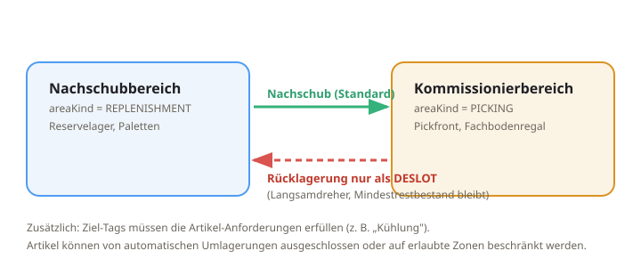

Operative WMS-Anwender
Für das Lagerpersonal: Schritt-für-Schritt-Anleitungen der täglichen Prozesse an Desktop, Tablet-Packplatz und Handscanner (MDE).

Wareneingang
- Avisierte Lieferung öffnen oder einen freien Wareneingang starten.
- Artikel und Menge je Position erfassen (bei Charge/MHD/Serie werden die Zusatzangaben abgefragt).
- Buchung erzeugt eine RECEIPT-Bewegung; die Ware liegt zunächst im Wareneingangsbereich.
Einlagerung
Aus dem Wareneingang werden Einlagerungsaufgaben erzeugt (RECEIVING → Zielplatz). Die Bestätigung bucht eine TRANSFER-Bewegung; die Dock-to-Stock-Zeit fließt in die Kennzahlen ein.
Kommissionierung
Picklisten haben eine feste Kommissionierart (Einzel, Batch, Multi-Batch, Multi-Tray, Wave, Zone) und eine Quelle (intern/extern). Der Scanner passt die Ansicht je Art an.
- Am Scanner die Pickliste wählen (Typ-Badge und Auftragsanzahl sind sichtbar).
- Lagerplatz scannen – gleiche Plätze werden gebündelt und nur einmal bestätigt.
- Artikel scannen (das Artikelbild hilft bei der Identifikation); Menge bestätigen.
- Bei trayfreien Batch-Listen: Sammelentnahme – gleicher Artikel/Platz für mehrere Aufträge in einem Zug.
- Bei Multi-Tray: zuerst das Tray scannen (Auftrag binden), dann Artikel.
Umlagerung

- Umlagerung anlegen: Artikel, Quelle, Ziel, Menge. Bereich (N/K) und Tags werden angezeigt.
- Das System prüft die Regeln: Ziel-Tags müssen die Artikel-Anforderungen erfüllen; die Richtung muss zulässig sein.
- Rücklagerung Kommissionier → Nachschub nur als Deslotting; der Mindestrestbestand bleibt erhalten.
- Optional automatisch generieren („⚡ Auto generieren"): Nachschub für nachgefragte Artikel und Deslotting für Langsamdreher, optional mit fester Zuweisung.
- Umlagerung zuweisen und ausführen (bucht eine TRANSFER-Bewegung).
Packen & Versand
- Am Packplatz den fertig kommissionierten Auftrag packen (Sendung entsteht, Status READY_TO_SHIP).
- Optional Versandtarife vergleichen (Rate-Shopping) und Carrier/Service wählen.
- Label erzeugen und Sendung disponieren (Status SHIPPED). Sendungsverfolgung über Carrier + Trackingnummer.
Retouren
- Retoure anmelden (optional mit Bezug zum Auftrag) und erwartete Positionen erfassen.
- Wareneingang der Retoure scannen; Menge je Position bestätigen.
- Disposition wählen: Wiedereinlagern / Aufarbeiten / Quarantäne / Verschrotten.
- Retoure abschließen – es entsteht ein Gutschrift-Ereignis für das ERP.
Qualitätsprüfung
Ein Q-Halt sperrt eine Menge Bestand (die Allokation überspringt gesperrten Bestand). Nach Prüfung wird freigegeben (Bestand wieder verfügbar) oder abgelehnt (verschrottet).
Inventur
Zählungen werden erfasst und gebucht; Differenzen erzeugen revisionssichere Bestandskorrekturen und fließen in die Bestandsgenauigkeit ein. Ein ABC-basierter Zählplan priorisiert, was als Nächstes zu zählen ist.